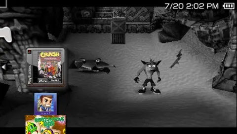

PSP PSX2PSP
Si tienes juegos de PlayStation 1 (PSX/PS1) en tu PC, te explicamos como puedes convertirlos para poder jugarlos en tu PSP (PlayStation Portable). Con PSX2PSP.
Para esta Guia
Requisitos para este tutorial
- PC o Notebook con Windows 7, 8, 8.1, 10
- Para descomprimir archivos .rar o .zip
Para Empezar este Tutorial
- Descargamos los archivos
- Descomprimimos el archivo .rar o .zip
- PSX2PSP 1.4.rar
- PSX2PSP v.1.4.2.rar
- Con la última versión disponible
- Una vez descargado nuestro archivo
- Lo extraemos y ejecutamos
- Abrimos la carpeta PSX2PSP v.1.4.? y ejecutamos PSX2PSP.exe
- Una vez abierta la aplicación PSX2PSP, toca el botón de Options; para establecer la ruta por defecto para cada una de las diferentes opciones.
- La más importante es la ruta o carpeta por defecto, para los archivos de salida PBP; para cuando se convierta el juego de PSX/PS1 a formato de PSP (PBP), se guarde en dicha carpeta.
- Toca el botón de Save para confirmar los cambios. Sal del programa y ábrelo nuevamente para aplicar los cambios.
- Luego, toca el botón de Convert menu.
- Se abrirá un menú con las opciones para convertir juegos de PSX a PSP. Toca el primer botón con tres puntos […], para seleccionar la ISO (backup del juego de PSX/PS1/PlayStation 1).
- Navega por las carpetas en tu PC, y selecciona el archivo de la imagen backup del juego de PSX (puede estar en formato ISO/BIN/IMG).
- Luego toca el botón de Abrir.
- Para finalizar, toca el botón de Convert.
- Si prefieres asignar una imagen de fondo e icono para el juego, entonces toca el botón de Customize PBP, antes de tocar el botón de Convert.
- Selecciona la imagen de icono ICON0.PNG (80×80 pixeles recomendada) y la imagen de fondo PIC1.PNG (480×272 pixeles recomendada).
- Toca el botón Customize PBP para previsualizar el resultado. Luego toca regresa al menú (Convert menu) y toca el botón de Convert para crear el archivo PBP del juego de PSX.
- Cuando finalice, toca el botón de OK.
- El archivo del EBOOT (juego de PSX en formato PBP), se habrá almacenado en la carpeta que estableciste por defecto o en la carpeta que asignaste al momento de hacer la conversión.
- 3. Ahora resta, transferir el juego en formato PBP a tu PSP. Para ello, navega por la carpeta en donde estableciste que se guardarían los juegos convertidos; y selecciona la carpeta del juego (como se muestra en la siguiente imagen). Haz click derecho y selecciona Copiar, o toca en los botones del teclado de tu PC [CTRL+C].
- 4. Conecta tu PSP a la PC, mediante el cable USB.
- 5. Luego, navega la memoria de almacenamiento de tu PSP; hasta la ruta
/PSP/GAME/. - 6. Dentro de esa carpeta GAME, pega la carpeta del juego que previamente has copiado; haciendo click derecho y seleccionando Pegar, o toca en los botones del teclado de tu PC [CTRL+V].
- 7. Sal del modo USB, y en tu PSP ve a la sección de Juegos/Memory Stick, y verás el juego listado en dicho apartado. 
- 8. Toca el botón X en tu PSP, para lanzar el juego recién convertido.

×